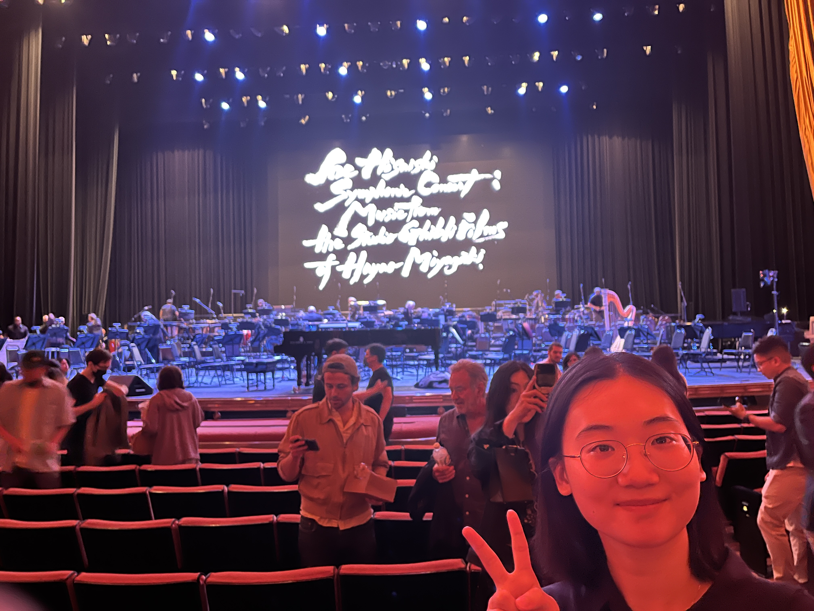
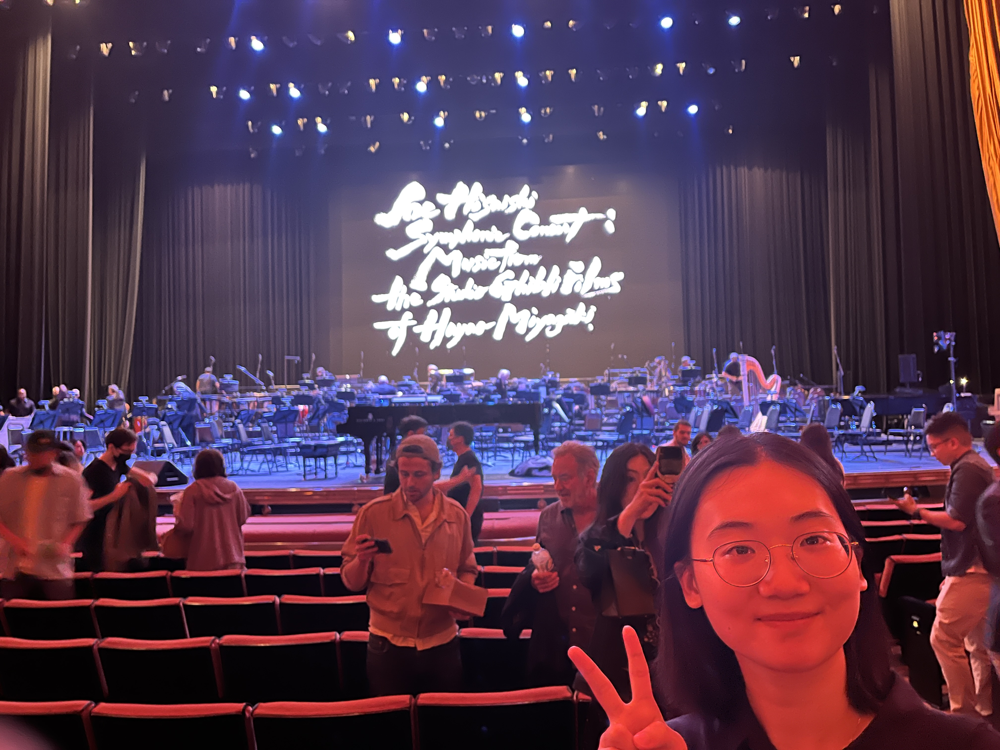
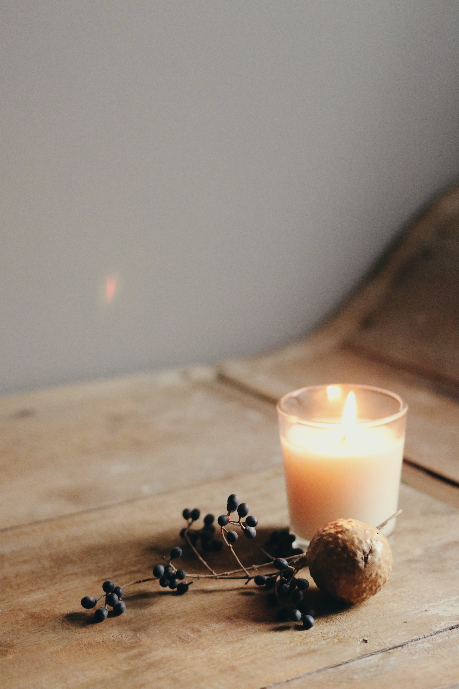
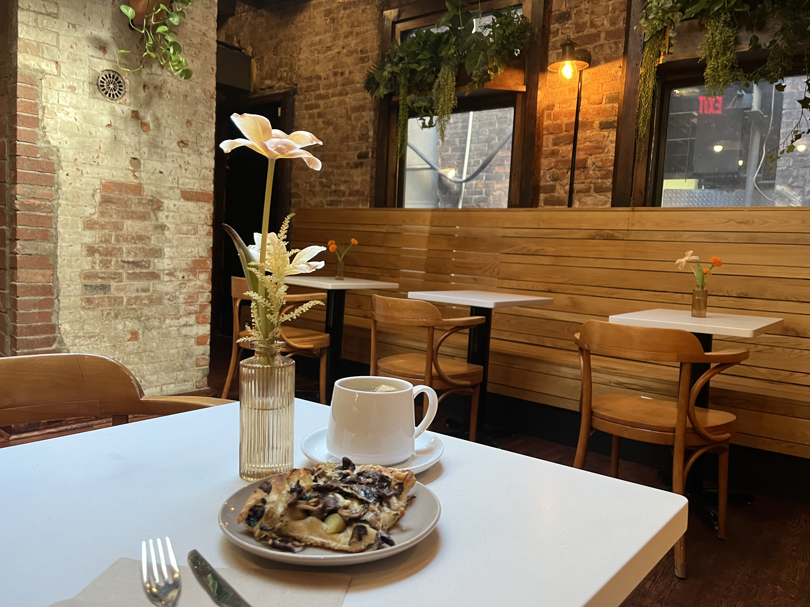
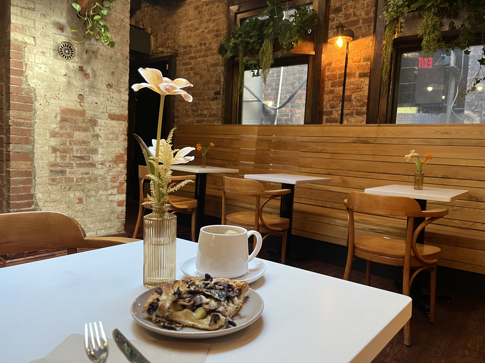

About Me
 

- Born and raised in China, currently pursuing a master degree in United States.
- Although my schoolworks may sound quite like traditional engineering stuff, which are all about math, algorithm, supply chains, etc., I actually combine a lot of my courseworks with Human-related disciplines, such as ergonomics, UX design, Work organizations. I consider myself to be abound in emotions, hence the trace of humanistics is always necessary in my life.
- A huge fan of Ghibli animations, accompanied by many Ghibli movies throughout childhood, and always not tired of watching them again during the solitary, tranquil hours. Love the nostalgic music, actually went to Joe Hisaishi's Symphony Concert in New York. #Dreamcomestrue#
Hobbies
Hours solitary
music
photo by Philip Myrtorp from unsplash
writing

photo by aaron burden on unsplash
candles
photo by Jessica Delps on unsplash
But drama of course

Hours outdoors are always necessary
travel
 
